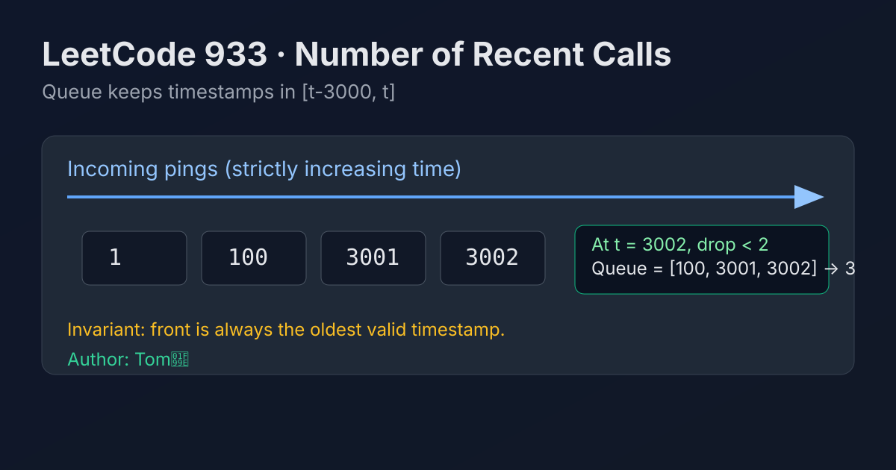

LeetCode 933: Number of Recent Calls (Sliding Time Window Queue)
LeetCode 933QueueDesignSliding WindowToday we solve LeetCode 933 - Number of Recent Calls.
Source: https://leetcode.com/problems/number-of-recent-calls/

English
Problem Summary
Design a class RecentCounter that counts requests within the inclusive time window [t - 3000, t]. For each ping(t), return how many calls happened in this window.
Key Insight
The calls arrive in strictly increasing t, so outdated timestamps always appear at the front. A FIFO queue naturally matches this lifecycle: push new time to back, pop expired times from front.
Brute Force and Limitations
Store all timestamps and scan the whole array every ping to count values in range. This is O(n) per query and gets slow with many calls.
Optimal Algorithm Steps
1) Keep a queue of timestamps currently relevant.
2) On ping(t), push t.
3) While queue front < t - 3000, pop it.
4) Queue size is the answer.
Complexity Analysis
Time: amortized O(1) per ping (each timestamp enters and leaves once).
Space: O(k), where k is number of calls kept in the current 3000ms window.
Common Pitfalls
- Using <= t - 3000 when removing old calls (wrong boundary).
- The window is inclusive, so t - 3000 must be kept.
- Forgetting that t is strictly increasing, which enables queue behavior.
Reference Implementations (Java / Go / C++ / Python / JavaScript)
import java.util.ArrayDeque;
import java.util.Deque;
class RecentCounter {
private final Deque<Integer> q;
public RecentCounter() {
q = new ArrayDeque<>();
}
public int ping(int t) {
q.offerLast(t);
int left = t - 3000;
while (!q.isEmpty() && q.peekFirst() < left) {
q.pollFirst();
}
return q.size();
}
}type RecentCounter struct {
q []int
}
func Constructor() RecentCounter {
return RecentCounter{q: make([]int, 0)}
}
func (rc *RecentCounter) Ping(t int) int {
rc.q = append(rc.q, t)
left := t - 3000
i := 0
for i < len(rc.q) && rc.q[i] < left {
i++
}
rc.q = rc.q[i:]
return len(rc.q)
}#include <queue>
using namespace std;
class RecentCounter {
private:
queue<int> q;
public:
RecentCounter() {}
int ping(int t) {
q.push(t);
int left = t - 3000;
while (!q.empty() && q.front() < left) {
q.pop();
}
return (int)q.size();
}
};from collections import deque
class RecentCounter:
def __init__(self):
self.q = deque()
def ping(self, t: int) -> int:
self.q.append(t)
left = t - 3000
while self.q and self.q[0] < left:
self.q.popleft()
return len(self.q)var RecentCounter = function() {
this.q = [];
this.head = 0;
};
RecentCounter.prototype.ping = function(t) {
this.q.push(t);
const left = t - 3000;
while (this.head < this.q.length && this.q[this.head] < left) {
this.head++;
}
return this.q.length - this.head;
};中文
题目概述
设计一个 RecentCounter 类。对每次 ping(t)，返回时间区间 [t - 3000, t]（包含边界）内的请求数量。
核心思路
由于 t 严格递增，过期请求一定在最前面。用队列保存“仍在窗口内”的时间戳：尾部入队新请求，头部不断出队过期请求。
暴力解法与不足
每次调用都遍历全部历史请求并计数，单次 O(n)，请求多时会明显变慢。
最优算法步骤
1）维护一个队列保存候选时间戳。
2）ping(t) 时先把 t 入队。
3）循环弹出所有 < t - 3000 的队头元素。
4）当前队列长度即答案。
复杂度分析
时间复杂度：均摊 O(1)（每个时间戳最多入队出队一次）。
空间复杂度：O(k)，k 为当前 3000ms 窗口内请求数。
常见陷阱
- 误写成删除 <= t - 3000，导致把边界请求删掉。
- 忘记窗口是闭区间，t - 3000 应该保留。
- 没利用 t 递增特性，导致实现复杂且低效。
多语言参考实现（Java / Go / C++ / Python / JavaScript）
import java.util.ArrayDeque;
import java.util.Deque;
class RecentCounter {
private final Deque<Integer> q;
public RecentCounter() {
q = new ArrayDeque<>();
}
public int ping(int t) {
q.offerLast(t);
int left = t - 3000;
while (!q.isEmpty() && q.peekFirst() < left) {
q.pollFirst();
}
return q.size();
}
}type RecentCounter struct {
q []int
}
func Constructor() RecentCounter {
return RecentCounter{q: make([]int, 0)}
}
func (rc *RecentCounter) Ping(t int) int {
rc.q = append(rc.q, t)
left := t - 3000
i := 0
for i < len(rc.q) && rc.q[i] < left {
i++
}
rc.q = rc.q[i:]
return len(rc.q)
}#include <queue>
using namespace std;
class RecentCounter {
private:
queue<int> q;
public:
RecentCounter() {}
int ping(int t) {
q.push(t);
int left = t - 3000;
while (!q.empty() && q.front() < left) {
q.pop();
}
return (int)q.size();
}
};from collections import deque
class RecentCounter:
def __init__(self):
self.q = deque()
def ping(self, t: int) -> int:
self.q.append(t)
left = t - 3000
while self.q and self.q[0] < left:
self.q.popleft()
return len(self.q)var RecentCounter = function() {
this.q = [];
this.head = 0;
};
RecentCounter.prototype.ping = function(t) {
this.q.push(t);
const left = t - 3000;
while (this.head < this.q.length && this.q[this.head] < left) {
this.head++;
}
return this.q.length - this.head;
};
Comments